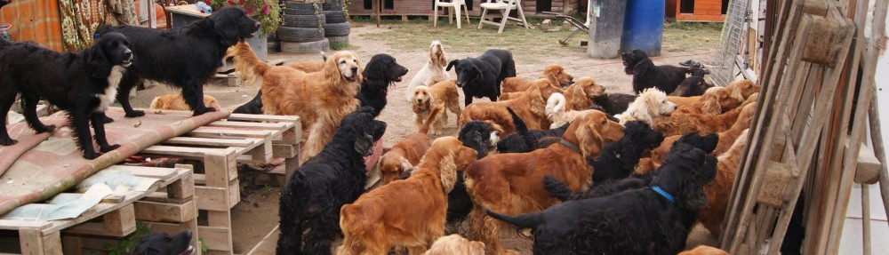

Spániel fajtamentés

Bár egyesületi formában, de civil spánielbolondokból szerveződött maroknyi kis csapatként napról napra, feladatról feladatra kovácsolódtunk egy mára már összeszokott önkéntesekből álló, tettre kész ……..valamivé!
Mi sem úgy indultunk, hogy volt egy kennelsor…ma sincs, hogy volt egyesületi furgon…ma sincs, hogy van céges telefon…ma sincs.
Reggel felkelünk, ellátjuk a saját és a mentett kutyáinkat, tesszük a dolgunkat aztán/közben, munka, család mellett – kinek kinek mi jutott – mentjük a kutyákat.
Kezdetben a kutyák mentése arról szólt, hogy volt mindig egy-két gazdátlan, bajba jutott spániel aki aztán saját erőből, lassan csordogáló támogatásból kapott oltást, chipet majd ivartalanításon esett át és végül felkerült a hirdetése néhány internetes oldalra, majd gazdihoz került.
Sajnos mára a leadott, kidobott kutyák száma megsokszorozódott. Átestünk a tűzkeresztségen és többször is valóra vált rémálmunk. Köszönhetően a felelőtlen szaporítóknak és a kutyatartásra alkalmatlan gazdiknak, mentettünk már minden porcikájában ízzé-porrá tört kutyát, nap mint nap rohamozó epilepsziás kölyköt, vagy éppen természeti katasztrófa sérültjét, testvéreket, vagy épp tenyészpárnak szánt fiatal kutyákat az éhhalál elől és sajnos kellett már nagy létszámú szaporítótelepet is felszámolnunk. Mára nem számít ritkaságnak ha törzskönyves, a tenyésztő látóköréből elkallódott cockereket kell gazdihoz juttatnunk.
Sajnos ezek az esetek egyre gyakoribbak, de ennél is nehezebbek a csendes hétköznapok, amikor a meglévő kutyáinkról kell gondoskodnunk, akik sorsa tőlünk függ; nekik mindennap enni kell adni, mindegyiknek szüksége van orvosi ellátásra, mindegyik ügyében fel kell emelni a telefont időnként, és bizony, ha vinni kell őket bárhova, a fuvart vállalók autóját meg kell tankolni, hiszen a támogatóink is átlagemberek, akik bérből és fizetésből élnek.
Ezzel telnek napjaink, próbáljuk nem növelni a létszámot, hiszen a meglévőket is csak nehezen tudjuk ellátni, kalapozunk és számlákat fizetünk, tartjuk a kapcsolatot a segítőinkkel, az örökbefogadóinkkal, az ideigleneseinkkel és próbálunk mindenkit meggyőzni arról is, hogy chipeztesse be a kutyáját, hogy ivartalanítson vagy éppen fogadjon inkább örökbe, minthogy pénzt adjon a szaporítók kezébe.
Menteni a fajta egyedeit – ez az elsődleges célunk, de mindeközben a megelőzésre is igyekszünk ugyanilyen nagy hangsúlyt fektetni!
Mottónk: a kutyának értéke legyen ne pedig csak ára, a kutyatartás legyen öröm!
Ennek eléréséhez keresünk partnereket akár tevékenyen akár csendes támogatóként a háttérből segítve munkánkat.